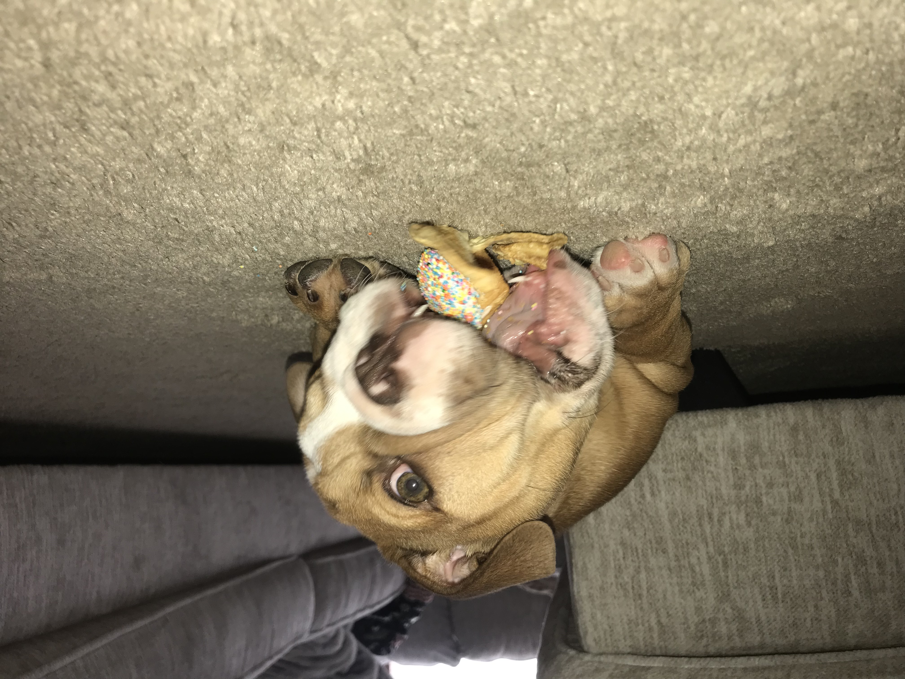

I have two dogs, one being a pomeranian and the other is a English bulldog! THe pomeranian is called Jojo and the bulldog is called Charlie. Jojo just had his birthday party and he turned 16 years old. Charlie is a puppy and about 12 weeks almost. They do not get along but hopefully they will with time. I have had other pets in the past and they are always fun to be around. Pets are really nice if you need to wind down and relax. It is also nice to sometimes do homework while one is sitting with you.
Click here to learn more about me!